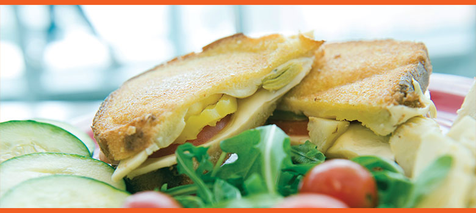

ABOUT US
At Syracuse University Food Services we are dedicated to service. We are in this business because
we love food and we want you to love the food we are serving you. So we go out of our way every
single day to do our best to serve you.

AWARDS
The NACUFS (National Association of College and University Food Services) Dining Awards that
we have won are a testimony to our services:
Loyal E. Horton Dining Awards
2016 Residential Dining Concepts, Bronze
2012 Catering Online Menu, Bronze
2011 Catering Special Event and Catering Online Menu, Bronze
2008 Residence Hall Single Stand Alone Concept, Bronze
2007 Residence Hall Single Stand Alone Concept, Grand Prize/Gold
2006 Residence Hall Sing Stand Alone Concept, Silver
2006 Catering Special Event, Honorable Mention
2005 Catering Special Event, Silver
2005 Residence Hall Single Stand Alone Concept, Bronze
2005 Catering Special Event, Bronze
2004 Retail Sales Multiple Concept, Second
2003 Catering Standard Menu, Second
Other Awards
2017 Arc of Onondaga Foundation, Certificate of Congressional Recognition –
Robert D. McAuliffe Community Service Award
2017 Peta’s Vegan Report Card – A+ grade for going above and beyond to
provide all students with exceptional vegan food
2016 Peta’s Vegan Report Card – A+ grade for going above and beyond to
provide all students with exceptional vegan food
2014 NACUFS C-Store Best in Business, Updating Your Existing C-Store, Food Works
2013 Syracuse University Chancellor’s Award for Public Engagement and Scholarship
(Community Member Preceptors for NSD Participatory Program)
2012 NACUFS C-Store Best in Business, Updating Your Existing C-Store, South Campus Express
2011 The Whole Grains Council’s Whole Grain Challenge for College/University
2004 Syracuse University Diversity Network Champion
2002 Syracuse University Exemplary Achievement Award for Quality or Process Improvement
2001 Syracuse University Exemplary Achievement Award for Service Excellence
2001 Monarch Enterprises Employer of the Year